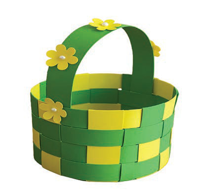

Scraps of paper materials
These are easy to find and are used to make baskets for carrying light items and for decoration. Figure 16 shows a basket made from scraps of paper material.

Steps for making baskets using paper materials
- Prepare the paper material. Cut the paper into long strips about 1 to 2 centimetres wide. Use a pencil or a thin stick to roll each strip tightly to form a tube-like shape;
- Create the base of the basket. Take eight to ten paper tubes and arrange them in a star shape (intersecting at the centre). Use glue to stick them together at the centre, and wait for them to dry;
- Start weaving the basket wall. Take one paper tube and begin wrapping it around the base tubes. Weave by alternating the tube over and under the base tubes in sequence. Continue weaving in a circular motion, ensuring each layer is firm and close together;
- Increase the size of the basket. When you reach the end of a paper tube, glue on another one and continue weaving. Repeat this process until the basket wall reaches the desired height;
- Finalise the top of the basket. Trim the base tubes with scissors to match the basket’s height. Fold the ends inward and glue them down to create a neat rim; and
- Add decorations. Enhance the appearance of the basket by adding decorative cords or extra embellishments.